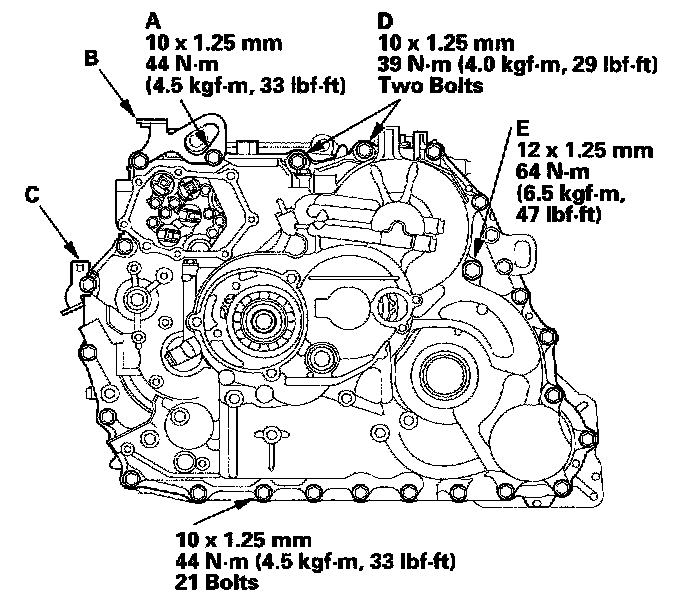

Transmission Reassembly
Transmission ReassemblyTransmission:

Special Tool Required
Main shaft holder 07GAB-PF50101
1. Make sure that the ATF magnet is cleaned and installed in the torque converter housing. Clean and install the ATF magnet, if necessary.
2. Install the main separator plate and the two dowel pins on the torque converter housing. Then install the ATF pump drive gear (A), driven gear (B), and ATF pump driven gear shaft (C). Install the ATF pump driven gear with its grooved and chamfered side facing down.
3. Install the torque converter check valve spring and valve in the torque converter housing.
4. Install the main valve body (seven 6 mm bolts and three 8 mm bolts). Make sure the ATF pump drive gear (A) rotates smoothly in the normal operating direction, and the ATF pump driven gear shaft (C) moves smoothly in the axial and normal operating direction.
5. If the ATF pump drive gear and ATF pump driven gear shaft do not move smoothly, loosen the main valve body bolts. Realign the ATF pump driven gear shaft, and retighten the bolts to the specified torques, then recheck. Failure to align the ATF pump driven gear shaft correctly will result in a seized ATF pump drive gear or ATF pump driven gear shaft.
6. Install the lubrication check valve, cooler check valve and cooler check valve spring in the main valve body. Install the lubrication check valve in the direction shown in the exploded view.
7. Install the secondary separator plate and the two dowel pins on the main valve body, and install the secondary valve body (one bolt).
8. Install the two check balls in the secondary valve body.
9. Install the accumulator separator plate and the two dowel pins on the secondary valve body.
10. Position the detent arm on the accumulator separator plate, and install the detent arm shaft into the detent arm through the separator plates to the main valve body.
11. Install the 8 x 62 mm ATF feed pipes in the main valve body, and install the accumulator body (11 bolts).
12. Install the regulator separator plate and the two dowel pins on the main valve body.
13. Install the stator shaft with the new O-ring, and install the regulator valve body (eight bolts).
14. Install the stator shaft stop in the main valve body.
15. Install the ATF strainer with the new O-ring (two bolts).
16. Install the ATF passage pipe (one bolt) in the torque converter housing.
17. Install the intermediary shaft (A) into the main valve body, and install the 26.5 mm washer (B) on the top of the intermediary shaft.
18. Install the transfer output shaft (C) in the torque converter housing, and install the thrust shim (D) on the top of the transfer output shaft.
19. Install the differential assembly (E) in the torque converter housing.
20. Install the baffle plate (F), and make sure the differential is clear of the baffle plate.
21. Install the baffle plate (G), and make sure the intermediary shaft is clear of the baffle plate.
22. Install the selector control shaft and the park lever link (H).
23. Assemble the mainshaft, countershaft, and secondary shaft.
24. Install the needle bearing (A) on the secondary shaft roller bearing in the torque converter housing.
25. Turn the shift fork shaft (B) so the large chamfered hole is facing the fork bolt hole of the shift fork.
26. Engage the shift fork (C) with the reverse selector on the countershaft, and join the mainshaft (D), countershaft (E), and secondary shaft (F), then install them in the torque converter housing and shift fork on the shift fork shaft.
27. Secure the shift fork (A) to the shift fork shaft with the lock bolt and the new lock washer (B), then bend the lock tab of the lock washer against the bolt head.
28. Install the park pawl shaft (A), pawl spring (B), park pawl (C), and park pawl stop (D).
29. Align the control lever pin with the manual valve guide.
30. Hook the detent arm spring to the detent arm.
31. Install the 8 x 85 mm ATF feed pipe (A), the 8 x 151.5 mm pipes (B), and the 8 x 40 mm pipe (C) in the accumulator body.
32. Install the 8 x 57.5 mm ATF feed pipe (A) and the 10 x 123 mm pipe (B) in the torque converter housing.
33. Install the two dowel pins (A) and the new gasket (B) on the torque converter housing (C).
34. Place the transmission housing (D) on the torque converter housing.
35. Wrap a screwdriver tip with tape to prevent damage to the reverse idler gear teeth. Engage the reverse idler gear with reverse gears by rotating the idler gear using the screwdriver.
36. While expanding the snap ring of the countershaft bearing using snap ring pliers, install the transmission housing onto the bearing part-way. Then release the snap ring pliers, and push down on the housing until it bottoms and the snap ring snaps into place in the transmission housing snap ring groove.
37. Install the transmission housing mounting bolts (21 bolts) and the bolt (A) along with the transmission hanger (B) and the transmission ground terminal bracket (C), and tighten the bolts in two or more steps in a criss-cross pattern to 44 N-m (4.5 kgf-m, 33 lbf-ft).

38. Install and tighten the two mounting bolts (D) to 39 N-m (4.0 kgf-m, 29 lbf-ft). Keep the mounting bolts free of grease or oil.
39. Install and tighten the special bolt (E) to 64 N-m (6.5 kgf-m, 47 lbf-ft).
40. Install the mainshaft holder onto the mainshaft.
41. Install the new lock washer (A) with the marked side (B) up over the mainshaft (C), and apply ATF to surfaces of the lock washer and old locknut (D).
42. Install the old locknut, and tighten it to seat the lock washer to 178 N-m (18.2 kgf-m, 132 lbf-ft), then remove the old locknut.
43. Install the new locknut and tighten it to 176 N-m (18.2 kgf-m, 132 lbf-ft), then stake the locknut to a depth (A) of 0.7-1.3 mm (0.03-0.05 in.) using a 3.5 mm punch (B).
44. Install the end cover (A), dowel pin (B), and new O-ring (C).
45. Install the snap ring cap (D) with the new O-ring (E).
46. Apply thread lock sealant to the threads of the sealing plug (F), and install the sealing plug and the new sealing washer (G).
47. Install the new O-ring (E) on the solenoid harness connector (F).
48. Route the solenoid harness through the transmission housing, and install the solenoid harness connector.
49. Connect the harness terminals to the solenoids:
^ YEL wire connector to shift solenoid valve A.
^ GRN wire connector to shift solenoid valve C.
^ RED wire connector to shift solenoid valve B.
^ ORN wire connector to shift solenoid valve D.
50. Secure the solenoid harness connector with the bolt on the transmission housing.
51. Install the solenoid valve cover (A) with the two dowel pins (B) and the new gasket (C) and secure it with the seven bolts.
52. Place the new gasket (A) on the solenoid valve cover, then install the 8 x 105.8 mm ATF feed pipes (B) and the 8 x 58.3 mm pipes (C) with their filter side into the transmission housing.
53. Install the new O-rings (D) over the ATF feed pipes, and install the A/T clutch pressure control solenoid valves A and B (E).
54. Install the 8 x 53 mm ATF joint pipe (A) with the filter side into its mounting hole (B).
55. Check the height (A) of the 8 x 53 mm ATF joint pipe (B) between the top (C) of the pipe and the solenoid valve body mounting surface (D). The height is about 7 mm (0.3 in.) If the height is over 7 mm (0.3 in.) install the pipe securely until it stops the accumulator body.
56. Install the new gasket (A) on the transmission housing. Install the 8 x 34.5 mm ATF pipe (B) with the filter end in the transmission housing, and install the 8 x 25.5 mm ATF pipe (D).
57. Install new O-rings (E) over the ATF joint pipes.
58. Install the A/T clutch pressure control solenoid valve C.
59. Set the control shaft to the N position by turning the selector control shaft with a 6.0 mm wrench.
60. Set the transmission range switch (A) to the N position. The transmission range switch clicks in the N position, and the selector control shaft hole (B) aligns with the N positioning line (C).
61. Install the transmission range switch gently over the selector control shaft (D) and install the bolts loosely.
62. Install the new lock washer (A) over the selector control shaft (B) by aligning the projection (C) of the lock washer with the N positioning line (D) on the transmission range switch (E) and install the locknut (F).
63. Push the locknut against the transmission housing to seat the range switch into the selector control shaft, and tighten the locknut to 12 N-m (1.2 kgf-m, 8.7 lbf-ft) while holding the selector control shaft with a 6 mm wrench, then bend the lock tabs against the locknut.
64. Tighten the range switch mounting bolts to 12 N-m (1.2 kgf-m, 8.7 lbf-ft).
65. Install the control lever (A) spring washer (B) lock washer (C) and locknut (D) on the selector control shaft (E).
66. Install the new O-ring (A) on the input shaft (mainshaft) speed sensor (B) and install the input shaft (mainshaft) speed sensor.
67. Install the new O-ring (C) on the output shaft (countershaft) speed sensor (D) and install the output shaft (countershaft) speed sensor and the sensor washer (E).
68. Install the 4th clutch transmission fluid pressure switch (A) with the new sealing washer (B). Tighten the switch with the metal part.
69. Install the 3rd clutch transmission fluid pressure switch (A) with the new sealing washer (B). Tighten the switch with the metal part.
70. Install the ATF cooler lines (C) with the new sealing washers (D) and the line bolts (E).
71. Install the connector bracket (F) and secure the ATF lines with the 6.0 mm bolts (G) on the transmission housing.
72. Install the ATF temperature sensor (H) with the new O-ring (I). Install the connector on the connector bracket and the harness clamp on the bracket.
73. Install the 2nd clutch transmission fluid pressure switch (A) with the new sealing washer (B). Tighten the switch by the metal part.
74. Install the ATF dipstick tube (A) with the new O-ring (B).
75. Install the ATF dipstick (C) in its tube.
76. Install the transmission ground terminal (D).